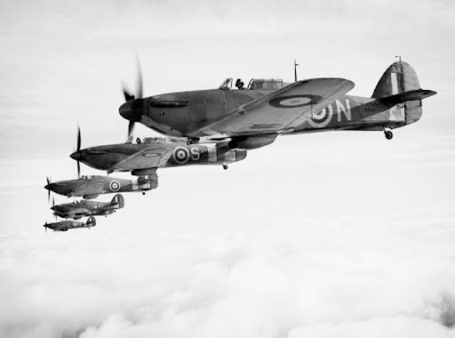
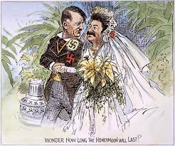

1 de setembro de 1939
Com a blitzkrieg em ação, a máquina de guerra de Hitler, juntamente com os soviéticos, invadiram simultâneamente a Polônia. Com a ambição de conseguir mais território e tornar o 3º Reich uma potência europeia, o governo alemão enviou cerca de 3 mil blindados e 1180 caças da Luftwaffe, que tinham como objetivo furar o cerco polonês para que a infantaria pudesse avançar. Como reação à esta invasão, os países da Europa ocidental decidiram declarar guerra contra a Alemanha nazista, visto que, após se retirarem da liga das nações e estarem crescendo cada vez mais pelo leste europeu, ameaçavam sua segurança, portanto era hora de armar uma defensiva contra os alemães.
Com o desejo de vingança e o objetivo de recuperar a moral do povo alemão, Hitler mandou suas tropas para o oeste, para atacar a França e “devolver” na mesma moeda o que foi feito após a primeira guerra mundial. Com um intenso bombardeio em regiões estratégicas, a infantaria pode avançar de forma efetiva, juntamente com o apoio da artilharia italiana, enfrentando certa resistência em algumas cidades francesas. Cerca de 46 dias após o começo da invasão, o país estava completamente submisso ao regime Nazista, sendo assim, para complementar sua vingança, fizeram com que, em 22 de assinassem sua rendição oficial no mesmo trem em que o tratado de versalhes foi feito. Para celebrar a conquista, Hitler e o exército alemão marcharam sobre Paris, como símbolo de vitória sobre seu adversário.

Era a vez do Reino Unido…
Após tomar o Norte da Europa e os Países Baixos, chegava a hora de enfrentar o segundo adversário mais esperado, o Reino Unido. Entretanto, a invasão não ocorreu como esperado, pois a contra-inteligência britânica junto aos pilotos da RAF, que desempenharam um papel sensacional em “Dogfights” nos céus ingleses, desestabilizando a ação da Luftwaffe. Também houve o combate naval, que foi essencial para que a defensiva fosse feita com sucesso, pois foi ele o responsável por retardar o avanço das tropas Nazistas por meio do Atlântico. Mesmo sendo bombardeado e alvejado múltiplas vezes, conseguiram resistir à Blitzkrieg, sendo assim, “estabilizando” a guerra na Europa, com nenhum grande avanço naquele período, entretanto, estavam sem condições para retaliar naquele momento, por conta do estrago causado nas batalhas.
Brutal...
Assim que dominavam por completo um país, a Wehrmacht tinha como objetivo realizar uma “limpeza étnica”
naquele local. Os principais alvos, eram os judeus, que foram demonizados e caçados desde o início do Reich,
pois eram considerados uma “raça impura”, e mereciam ser mortos.
O destino deles para com os alemães foi sombrio, pois foram arrancados de suas casas, tiveram seus bens
tomados e foram enviados para campos de concentração, onde os mais saudáveis seriam escravos, trabalhando em
condições subumanas e crianças, velhos, mulheres e doentes seriam executados instantaneamente nas câmaras de
gás.
Outra brutalidade que os alemães faziam era levá-los para guetos, que eram locais com uma vigia forte, onde
ficavam submetidos a uma pobreza extrema, sem ter o que comer nem beber.
Infiel…
Charge representando o pacto Molotov-Ribbentrop
Após a excelente campanha na europa ocidental, os olhos de Hitler cresceram mais uma vez. Dessa maneira, decidiram que iriam começar a maior operação para a dominação da URSS: A operação “Barbarossa”, acabando de vez com o pacto Nazi-Soviético.
Foi uma das operações mais sangrentas da segunda guerra mundial, para ambos os lados. Começou com uma certa vantagem para os alemães, sendo estes responsáveis por fazer uma ofensiva eficiente, cercando Leningrado e dominando Kiev sem grandes problemas. Além disso, causaram um imenso dano às aeronaves soviéticas, que seriam utilizadas mais tarde, contra a Luftwaffe.
Após estas invasões, as forças armadas nazistas estavam sem suprimentos. Para conseguir abastecer suas tropas, precisaram invadir o Cáucaso, local onde os recursos naturais eram abundantes. De lá, seguiram para Stalingrado, cidade importantíssima para os soviéticos.
Para a invasão de Stalingrado, foram enviados bombardeios que deixaram a cidade em pedaços. Sendo assim, a Wehrmacht começou a entrar na cidade, entretanto foram surpreendidos. Os soviéticos não recuaram, não por sua extrema valentia, mas por saberem que recuar seria considerado um ato de traição, passível de morte, então permaneceram lutando mesmo nos escombros, e daquele momento em diante, o rumo da batalha mudou ferozmente. Em meio a uma montanha de corpos e destroços, os soldados se enfrentavam, sem um ganho significativo de território.


A luta foi tão desgastante, que durou até o inverno russo, onde as temperaturas ficaram abaixo dos 30 graus negativos. Aproveitando esta condição, os soviéticos fizeram um cerco na cidade, para forçar a rendição dos soldados alemães e conseguir a vitória na batalha. Com a “red army” posicionada fora e dentro da cidade, era impossível que os alemães conseguissem suprimentos para continuar a lutar e sobreviver. Um pedido de ajuda foi enviado para Berlim enquanto as forças alemães lutavam para continuar vivas, entretanto foi negado pelo próprio Hitler. Desse modo, após muitas mortes de soldados, eles decidiram se render ao exército vermelho, encerrando assim, a batalha de Stalingrado.
Contra-ataque
Com as Afrika Korps sendo expulsas do norte da África pelos aliados e os avanços soviéticos tornando-se cada vez mais notáveis, principalmente em chegou a hora da retomada da França. Foi assim, que começava a operação Overlord, que seria decisiva para o fim da guerra, fazendo os alemães lutarem em duas frentes.
Após o desembarque na Normandia, Americanos, Britânicos e Canadenses começaram uma pesada investida, com o objetivo de retomar todo o território conquistado pelos nazistas na primeira fase da guerra. Também contavam com um apoio de senegaleses, que se voluntariaram para ajudar na retomada. Além disso, financiaram e apoiaram movimentos de infiltração e resistência na França, Países Baixos e na Escandinávia principalmente, pois seria lá o polo científico nazista para a criação de uma bomba nuclear, segundo um cientista alemão que desertou de seu país, chamado Albert Einsten.
Por serem inesperados e rápidos, acabavam por ser efetivos contra os nazistas, pois a sabotagem atrasa suas preparações para as batalhas, desorganiza suas forças armadas e destruía suas armas, em algumas ocasiões.
Entretanto, no sul Europeu havia um problema em avançar por terrenos montanhosos, o que permitia que a resistência italiana fosse mais efetiva nesses terrenos. Entretanto, tudo mudou com a entrada do Brasil na guerra, muito por conta do ataque alemão à costa brasileira e da influência americana, que financiou indústrias nacionais. Atuavam tanto em terra, com a FEB (Força expedicionária Brasileira) e a FAB (Força Aérea Brasileira). Sem experiência, o exército demorou um pouco para avançar em primeiro momento, mas alguns dias depois, conseguiu tomar importantes posições italianas, como Monte Castelo, Belvedere, Massarosa e Camaiore. Sendo assim, a Itália foi completamente derrotada na segunda guerra, bastando apenas avançar pelo sul e surpreender a Alemanha por mais uma frente.
Desfecho na Europa
Com um imenso cerco formado pelos aliados e um avanço feroz vindo de todas as direções, não demorou muito para que a Alemanha fosse caindo de pouco a pouco e seu exército desmoronando por completo. Os soviéticos vinham com força total, com um efetivo de milhões de soldados e milhares de tanques T 34 que em grande quantidade, oprimiam os Panzers que tentavam resistir. Por conta disso, conseguiram prosseguir rapidamente até chegar a Berlim, onde já não restava mais exército, mas sim, veteranos da primeira guerra, crianças e mulheres. Quando chegaram à cidade, foi um massacre total. Logo depois, tropas vindas do oeste chegaram, eliminando a tímida resistência que ainda tinha.

Após saberem que tinham sido derrotados, alguns grandes nomes do partido nazista se suicidaram e outros tentaram fugir, mas foram pegos por tropas aliadas. Logo após isso, os restantes foram levados à julgamento, em Nürnberg, e foram sentenciados em penas que variaram de 10 anos à pena de morte, em casos de crimes cometidos pela humanidade.